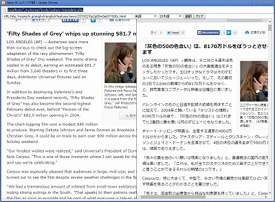
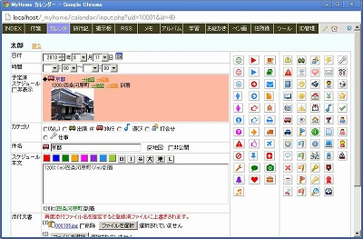

MyHome Portal ダウンロード / 変更履歴
「MyHome Portal」一式をダウンロードできます。
- ダウンロード： MyHome Portal Ver.8.02 一式 (サンプルデータベース付) (SOURCEFORGE.JP)
MyHome Portal Ver.8.02 (2016/08/02)
- 変更点
- トップページ「INDEX」のボタン「料理(G)」「価格(G)」を廃止。
- トップページ「INDEX」にボタン「ヨドバシ」「ヤフーshop」を追加。
- ボタンデザインcssのデフォルトを、kube.cssに変更。
define("_STYLE_SHEET_BUTTON", "../style/button/kube.css"); - 「ID管理」でW↑をクリックすると表示されるポップアップウインドウに件名と備考内容も表示するように変更。
- 「カレンダー」に国民の祝日「山の日」追加するためのCSVファイル「m_holiday_add.csv」を入れました。
以下のブログの記事に従って追加してください。
http://ok2nd.hatenablog.com/entry/2016/07/13/104524 - おもな変更モジュール
・index/__define_index_search.php
・__common__/__define_common.php
・id-manager/view-idpass.php
・__define_common_my_sample.php
・style/id-manager.css - 追加モジュール
・z_db_backup/m_holiday_add.csv
MyHome Portal Ver.8.01 (2016/02/07)
- 変更点
- トップページ「INDEX」にボタン「乗換(Yahoo)」を追加。
- トップページ「INDEX」からボタン「百度」を廃止。
- 「預貯金管理」の一括修正/追加/削除ページの預入額、利率の入力枠内の数字を右揃えにしました。
- 「GPSログ」のGPXファイルからの新規登録で、ログの名前取得先をGPXの<trk>→<name>から<metadata>→<name>に変更。「MyTracks」のGPXを想定して仕様を決めていたが「MyTracks」が終了してしまうようなので「GeoTracker」のGPXの仕様に合わせた。（GeoTrackerは編集で履歴の名前を変更しても<trk>→<name>には反映されないため）
- ツール「Google Maps API V3版」から「写真」表示機能を廃止。Google Maps APIからPanoramio連携が廃止されてしまったようなので。
- おもな変更モジュール
・index/__define_index_search.php
・style/original/kakeibo.css
・abook/maps-abook-v3.php
・calendar/maps-include-v3.php
・diary/__include-maps-v3.php
・gpslog/maps-gpslog-v3.php, view.php
・photo/maps-photo-v3.php
・tools/google-maps-earth-v3.php, google-maps-earth-multi-v3.php
MyHome Portal Ver.8.00 (2015/09/28)
- 変更点
- Ver.1.00リリースから約8年目ということで、Ver.8.00としました。
- Google Maps API のストリートビューの人形マーク表示位置が左上から右下に仕様変更になったようなので、ストリートビュー用のウインドウ表示枠位置とサイズを少し変更しました。
- おもな変更モジュール
・calendar/maps-alone.php
・diary/maps-diary.php
・tools/google-maps-earth-v3.php, google-maps-earth-multi-v3.php
MyHome Portal Ver.7.04 (2015/02/16)
- 変更点
- ツールに「Yahoo ホームページ対訳」を追加。指定したURLのホームページとYahooウェブ翻訳で翻訳したページを左右に並べて表示します。左右のフレームは同時にスクロールできます。
 - 「住所録」の「葉書宛名書き」の住所等の印字位置を調整。差出人の郵便番号位置は年賀状に合わせています。位置調整は__define_abook_pdf_my_sample.phpの定義も合わせての調整になっています。
- 「メモ」等の一覧表示に、5ページ単位のページ移動「←スキップ (5)」「→スキップ (5)」を追加。
- 「INDEX」「Myニュース」のニュース検索を、http://news.google.co.jp/newsから、
http://www.google.co.jp/search?tbm=nwsに変更。 - 「INDEX」「Myニュース」から、「記事見出しのみ」ボタンを廃止。
- 「INDEX」「Myニュース」に「Google」検索ボタンを追加。
- おもな変更モジュール
・tools/index.php
・__common__/include-common-mp-list.php
・abook/do-proc.php
・index/list-my-template-mynews.php
・__define_abook_pdf_my_sample.php - 追加モジュール
・tools/yahoo-translate.php
MyHome Portal Ver.7.03 (2014/11/16)
- 変更点
- 「カレンダー」に、印刷用ページを追加しました。余分なヘッダー等を無くしたシンプルな月間スケジュールを印刷します。1か月～12か月分をまとめて印刷できます。
- 「カレンダー」で他人が書き込んだスケジュールに「by ハンドル名」表示しないように出来るようにしました。実運用定義ファイルで以下を指定します。
define("CALENDAR_HANDLE_PRINT_BY", "NO"); - 「カレンダー」のアルバムモードでフォルダ名を表示できるようにしました。フォルダ名から日付部分を除いて表示します。実運用定義ファイルで以下を指定します。
define("CALENDAR_ALBUM_VIEW_FOLDER_NAME", "YES"); - 「学習」に、英文の発音機能を追加しました。「High Quality Text-to-Speech API」を使っています。
http://tts-api.com/
以下のサイトで紹介されている方法を使いました。
http://hello-apis.blogspot.jp/2013/02/tts-apicom-text-to-speech-api.html
<button onclick="(new Audio('http://tts-api.com/tts.mp3?q=<?= urlencode($rec['c_answer']) ?>')).play();return false;">
<img src="../icon/speaker.png"></button>
テストでは、以下の２つの方法も試しましたが、上記方法が一番レスポンスが良かったようです。１つは、次のサイトで紹介されている「jquery.say.js」を使う方法です。
http://stabucky.com/wp/archives/4576
<button onclick="sayEnglish('<?= str_replace("'", '’', $rec['c_answer']) ?>');return false;">
<img src="../icon/speaker.png"></button>
<script src="../scripts/jquery.say.js"></script>
<script>
function sayEnglish(text) {
$.say(text.replace(/’/g, "'"));
}
</script>
もう１つは、Ajaxを使って、audioタグを返す方法です。
<button onclick="speechEnglish('<?= urlencode($rec['c_answer']) ?>');return false;">
<img src="../icon/speaker.png"></button>
<script>
function speechEnglish(text) {
$.ajax({
type: "GET",
url: "text-to-speech.php?q="+text,
async: true,
success: function(res){
$("#mp3").html(res);
var myAudio=document.getElementById("english");
myAudio.play();
}
})
}
</script>
<span id="mp3"></span>
【text-to-speech.php】 <?php echo '<audio id="english" src="http://tts-api.com/tts.mp3?q='.$_GET['q'].'>" controls></audio>'; ?>
・calendar/month.php, _my_calendar.php
・study/mycheck-my-template.php, popup.php
・style/original/calendar.css, study.css
・__define_common_my_sample.php
・calendar/month-print.php
・diary/month-print.php
・icon/speaker.png
MyHome Portal Ver.7.02 (2014/11/02)
- 変更点
- MySQL関数をmysqliに変更。(mysql拡張モジュールが、PHP5.5から非推奨になっているため。)
$link = mysql_connect('localhost', 'my_user', 'my_password'); $db_selected = mysql_select_db('database_name', $link); ↓↓↓ $link = mysqli_connect('localhost', 'my_user', 'my_password', 'database_name'); - ただし、モバイル用モジュール「_mobile/以下」は、mysqli非対応のままです。
- ツール「Google Maps API V3版」で、ストリートビューをオフにした時に、人形マークを元に戻すようにしました。
- ツール「Google Maps API V3版」で、ストリートビュー状態では、現在地情報ウインドウを表示しないようにしました。
- おもな変更モジュール
・データベース・アクセスのある全モジュール
・tools/google-maps-earth-v3.php, google-maps-earth-multi-v3.php - 追加モジュール
・_mobile/__common__/include-common-all-701.php（_mobile用：mysqli非対応版)
MyHome Portal Ver.7.01 (2014/09/21)
- 変更点
- Ver.7.00で、Google Maps APIを使ったページの情報ウィンドウに縦スクロールバーを表示させないために、スタイルシートに以下を追加しましたが、情報ウィンドウ内の一部が表示されなくなってしまう場合がある事が分かったため、修正しました。
google-maps-earth-v3.phpでは、スタイルシートはそのままとし、情報ウィンドウに表示するテキストの最後に<br><br>を追加。
それ以外(abook/maps-abook-v3.php, diary/maps-diary.php, tools/google-maps-earth-multi-v3.php)では、スタイルシートから、以下を除去しました。.gm-style-iw { overflow: hidden ! important; } .gm-style-iw div { overflow: hidden ! important; } - おもな変更モジュール
・tools/google-maps-earth-v3.php, google-maps-places.php, google-maps-earth-multi-v3.php
・abook/maps-abook-v3.php
・diary/maps-diary.php
MyHome Portal Ver.7.00 (2014/08/24)
- 変更点
- Ver.1.00リリースから約7年目ということで、Ver.7.00としました。
- ツール「Google Maps API V3版」で、検索結果やマウスクリックで作成されるマーカーに地点名を表示するようにしました。ルート表示をして印刷した時に分かりやすいようにするためです。マーカーの地点名をクリックすると、表示地点名を変更できます。


- ツール「Google Maps API V3版」のルート表示で、ルート全体の所要時間と距離を表示できるようにしました。ポイント間の時間と距離の簡潔な表示も追加しました。
- ツール「Google Maps API V3版」のルート表示で、車の場合、有料道路の有無を選択できるようにしました。
- ツール「Google Maps API V3版」のルート表示で、ルートをドラッグして変更できるようにしました。
- ツール「Google Maps API V3版」で、ルート表示時は、検索結果やマウスクリックで作成されたマーカーを一旦非表示とするにしました。ルート表示のポイント・マーカーが隠れないようにするためです。
- ツール「Google Maps API V3版」で、「クリア」ボタンを廃止し、検索文字入力テキストボックスに、クリアボタン(×)が付くようにしました。
- ok2nd.jsのzen2han()で、全角「ー」を半角「-」に変換しないように仕様変更。
- 「INDEX」の「ブログ」ボタンを廃止。
- おもな変更モジュール
・tools/google-maps-earth-v3.php
・scripts/ok2nd.js
・index/__define_index_search.php
・__define_index_search_my_google.php, __define_index_search_my_yahoo.php
MyHome Portal Ver.6.15 (2014/08/02)
- 変更点
- ツール「Google Maps API V3版」のルート表示のルートナビを閉じることが出来るようにしました。
- おもな変更モジュール
・tools/google-maps-earth-v3.php, google-maps-earth-multi-v3.php
MyHome Portal Ver.6.14 (2014/07/06)
- 変更点
- 「INDEX」検索文字入力テキストボックスに、クリアボタン(×)を付けました。jQueryプラグインaddclearを使っています。
$(function(){ $('#search_str').addClear(); }); - 「INDEX」の検索ボタン「価格(G)」「楽天」「Twitter」を、サイトURL変更に合わせてスクリプト修正。
- 「週間天気予報」の台風画像が、tenki.jpの画像URL変更により表示されなくなったのを修正。
- おもな変更モジュール
・index/_add_header-index.php, tenki.php, __define_index_search.php
・__define_index_search_my_google.php, __define_index_search_my_yahoo.php - 追加モジュール
・scripts/addclear.js
MyHome Portal Ver.6.13 (2014/06/01)
- 変更点
- ツール「GPSログ View」の修正画面で、GPXファイル差し替えた場合、名前と補足説明をGPXファイルのデータで置き換えていた仕様を変更。修正画面の名前と補足説明が有効になります。
- tenki.jpのtenki RSSサービスが終了してしまったので、「週間天気予報」の週間天気をlivedoor天気情報(Weather Hacks)のRSS利用に変更しました。
- おもな変更モジュール
・gpslog/edit.php, view.php
・index/tenki.php, tenki-ajax.php
MyHome Portal Ver.6.12 (2014/05/13)
- 変更点
- 「メモ」等の添付ファイルのダウンロードで、ファイル名の頭のID番号を付けないように変更しました。aタグのdownload属性(download="ファイル名")を使っていますので、HTML5対応ブラウザでしか機能しません。
- 「INDEX」検索ボタンの「ニュース」検索を、http://news.google.co.jpからhttp://www.google.com/search?tbm=nwsに変更。
- 「INDEX」検索ボタンの「ブック」を「書籍」に変更。
- 「INDEX」検索ボタンの「百科Yahoo」を廃止。「Yahoo!百科事典」がサービス終了になったので。
- 「INDEX」検索ボタンの「天気」をtenki.jpから、Yahooに変更。
- おもな変更モジュール
・__common__/include-common-html.php
・index/__define_index_search.php
・__define_index_search_my_google, __define_index_search_my_yahoo.php
MyHome Portal Ver.6.11 (2014/04/10)
- 変更点
- 「Google Maps API V3版」の「探す」結果マーカー位置を少し修正。
- 「Google Maps API V3版」のレストラン等の場所検索で、レストラン名等に&が含まれているとマーカーが黒くなってしまう不具合を修正。
- トップページ「INDEX」用のブログパーツ「はてな人気」(rss-hatena-hotentry.inc)のタイムスタンプが正しく表示されるように修正。
- 「INDEX」で、URLの登録がない場合は、サムネイル・キャプチャを非表示に修正。
- 「INDEX」のサンプルデータを全面変更。『2nd INDEX』と同じにしました。
『2nd INDEX』：http://ok2nd.me/index/ - 「住所録」日本百選データの夜景100選「池田山」が北海道になっていたのを、岐阜県に修正。夜景100選に、北海道の測量山を追加。
- おもな変更モジュール
・index/_include-list-data.php, list-my-template-thumbnail.php
・tools/google-maps-earth-v3.php
・blog-parts/rss-hatena-hotentry.inc
・blog-parts/z_db_backup/_db_index.bk.txt, _db_abook.bk.txt
・実運用サンプル/日本百選.csv
MyHome Portal Ver.6.10 (2014/03/09)
- 変更点
- 「Google Maps API V3版」の世界遺産、日本百選、日本百名山、日本桜名木、日本鉄道駅検索結果を、別ページでなく、同じページ内に表示するように、仕様変更。
- 「Google Maps API V3版」と「住所録のマップ(V3)」で、マーカーをクリックすると、そのマーカーが一番上に表示されるようにしました。
- 「Google Maps API V3版」のオートコンプリート機能を、Google Suggest APIを使った予測変換(単語補完)機能に変更。
- ツール「HTML TABLE to CSV」を追加。URLを指定して、HTMLテーブルデータをCSVに変換してダウンロードします。
以下のサイトのソースコードを使わせていただきました。
http://pentan.info/php/sample/table_tag2csv.html
- おもな変更モジュール
・tools/google-maps-earth-v3.php
・abook/maps-abook-v3.php - 追加モジュール
・tools/google-maps-places.php
・tools/html-table-to-csv.php
MyHome Portal Ver.6.09 (2014/02/09)
- 変更点
- 「サンプルDB自動セットアップツール」とツール「実運用環境バックアップ」を、 データベースサーバーがlocalhostでない場合に対応させました。 定義ファイルの「_DB_SERVER」で指定されているデータベースサーバーに対して実行します。
- 「住所録」と「預貯金管理」で、一覧表の行にマウスが乗ったときに行をハイライトするようにしました。
- 「カレンダー」の「天気出現地図」の天気マーク判定ロジックを変更。
- 一覧形式のページで、ページ指定が最終ページを超えた場合、エラーとならず、先頭のページが表示される不具合を修正。
- 「INDEX」一覧で、ホームページのキャプチャ画像作成に使用するサービス・サイトを実運用定義ファイルで変更できるようにしました。
define("index_CAPTURE_CREATE_SITE", 'http://capture.heartrails.com/130x130/cool?');デフォルトで使用するサービス・サイトをHeartRails Captureに変更しました。
http://img.simpleapi.net/
↓↓↓
http://capture.heartrails.com/ - ツール「Google Maps API V3版」のPlacesライブラリを使ったスポット検索を改善しました。
以下のページを参考にさせていただきました。
http://phpjavascriptroom.com/?t=ajax&p=googlemapsapiv3_lib_places - おもな変更モジュール
・setup-sample.php
・db_tool/backup-mydb.php
・calendar/__include-weather.php, year.php
・abook/list-my-template***.php
・tools/google-maps-earth-v3.php
・index/list-url.php, list-my-template-thumbnail.php, _include-list-data.php
・__common__/include-common-mp-list.php
・style/original/abook.css, kakeibo.css - 追加モジュール
・db_tool/setup-database-sample.php
MyHome Portal Ver.6.08 (2014/01/04)
- 変更点
- 「学習」のポップアップ・ウインドウで、キーボード操作が出来るようにしました。
・[Enter][Space]：解答/質問表示 & 次
・[→]：次
・[←]：前
・[Tab]：Skip(10) Next
・[Caps Lock]：Skip(10) Back
・[Home]：先頭
・[End]：最後
・[R]：ランダム
・[A]：Auto
・[H]：メニュー On/off - 「週間天気予報」に表示していたtenki.jpの「衛星画像」がブログサービス終了ということで表示されなくなってしまったので、weather.goo.ne.jpの「衛星画像」置き換えました。
- 「Google Maps API V3版」の地名検索欄に、オートコンプリート機能を付けました。
- 「アルバム」のギャラリで、Chromeで動作していなかったギャラリ1、ギャラリ2を廃止しました。
- 「アルバム」に「Fotorama」を使ったギャラリを追加して「ギャラリ1」としました。
http://fotorama.io/
- 「アルバム」に「jQuery CollagePlus」を使ったギャラリを追加して「ギャラリ2」としました。
http://collageplus.edlea.com/ - おもな変更モジュール
・study/popup.php
・index/tenki.php
・tools/google-maps-earth-v3.php - 追加モジュール
・scripts/ubilabs-geocomplete/*
・photo/gallery1.php, gallery2.php (新)
・photo/fotorama/*
・photo/jquery-collagePlus/*
MyHome Portal Ver.6.07 (2013/12/01)
- 変更点
- ツール「世界地図（国旗付き）」を追加。以下のページを、利用させてもらいました。
http://xml-xsl.sakura.ne.jp/google_maps17/google_maps17.htm - 「住所録」が世界遺産モードの場合、「世界地図」を追加。「世界地図」の国選択から、その国の世界遺産一覧を表示できます。
- 「カレンダー」の一覧表示の日付クリックで、月間カレンダー表示に切り替わるように、仕様変更。
- 「カレンダー」の一覧表示で、カテゴリの背景色を反映するように、仕様変更。
- サンプルDBセットアップのソースコードを一部修正。
- NAVER検索サービスが2013年12月18日でサービス終了するので、トップページの「NAVER」検索ボタンを廃止。
- トップページに、NAVERまとめ検索ボタン「まとめ」を追加。
- おもな変更モジュール
・abook/list-my-add-filter.php
・calendar/list-my-template.php
・setup-sample.php
・index/__define_index_search.php - 追加モジュール
・abook/world-map.php
・tools/world-map/*
MyHome Portal Ver.6.06 (2013/11/04)
- 変更点
- 「INDEX」トップページのカレンダースケジュール欄をAjax対応にしました。詳細ボタンのOn/Offでページ遷移しません。
- 「INDEX」トップページの「辞書Yahoo」「料理(キ)」検索ボタンがサイト側の仕様変更で機能しなくなっていたのを修正。
- 「住所録」の「一括修正/追加/削除」で、メモ欄が、valueconvertor.jsでASCII変換されるようになっていました。例えば、「ー」が「-」に変換されてしまう状態でした。これを修正しました。
- 「住所録」世界遺産データのRef.1380:Sangha Trinationalの国名の「カメルーン共和国」が、「カメル-ン共和国」になっていたのを修正しました。
- 「住所録」一覧の分類が世界遺産の場合、新規登録/修正画面を世界遺産専用の画面としました。
- 「付箋」で編集ボタンを押すとフリーズする不具合を修正しました。Ver.6.01で、jquery-ui.min.jsのバージョンを上げたのが原因でした。
- ツールに「HTML テキストを自分のCSSで読む」を追加。ホームページの文章を自分が読みやすいスタイルシートで読みます。
余分なHTMLタグは除きます。<img>、<object>タグなどの表示/非表示の選択が出来ます。
実運用定義ファイルで、使うcssファイルを変更できます。
define('HTML_MY_CSS_STYLE_SHEET', '../style/tools/html-my-css.css'); - 「RSS」で、MagpieRSSを使わずに、simplexml_load_file()を使う方式を選択できるようにしました。
実運用定義ファイルで、以下を設定すると、simplexml_load_file()を使います。この場合、キャッシュしません。
define("RSS_SIMPLEXML_LOAD_USE", "YES"); - アカウント名、パスワードの最小文字数を5から3に変更。
- アカウント名、パスワードの最小文字数の設定を実運用定義ファイルで設定できるようにしました。
define("ACCOUNT_ID_NAME_MIN_LENGTH", 3); define("ACCOUNT_PASSWORD_MIN_LENGTH", 3); - おもな変更モジュール
・abook/list.php, input.php
・tools/index.php, tategaki.php
・index/index.php, __define_index_search.php
・account/__define.php, __include-account-check.php, _add_newaccount_header.php
・account/account-chk.php, newaccount.php, edit-mypass.php, edit-id-mgr-pass.php
・rss/ajax-rss.php, ajax-rss-popup.php, __include-common-rss.php
・scripts/jquery-ui.min.js (バージョン・ダウン)
・__common__/include-common-all.php
・__define_index_search_my_google.php, __define_index_search_my_yahoo.php
・__define_common_my_sample.php - 追加モジュール
・index/ajax-calendar.php
・tools/html-my-css.php
・rss/__include-common-rss-simplexml.php
・style/tools/html-my-css.css
MyHome Portal Ver.6.05 (2013/10/20)
- 変更点
- 「週間天気予報」で、台風が発生していない場合、直近の台風情報が表示され続けてしまう問題を修正。
- テレビ番組表RSS(http://rey.rash.jp/junk/)が、機能していないようなので、サンプルのトップページから外しました。代わりに、fx-newsを表示するようにしました。
- 「住所録」の「世界遺産」で、世界遺産名のウムラウト付き文字等が?で文字化けしていたのを修正。
- 「住所録」の「世界遺産」に、2012～2013年に新たに登録された世界遺産を追加。
- 「住所録」の「世界遺産」で、２ヶ国以上にまたがる世界遺産は重複して登録していたのを、1行に変更。
- 「実運用サンプル」フォルダにCSVファイルとして「世界遺産_2013_UTF8.csv」を追加しました。
文字コードがShift-JISではなく、UTF-8になっていますので、注意してください。
テキストエディタTeraPadで表示・編集すると、ウムラウト付き文字等が?で文字化けします。
運用済みの実運用データベースの世界遺産データを差し替える場合は、次の手順で行ってください。
データを差し替えると、チェック項目のチェックデータ(サンプルでは制覇のデータ)が失われますので、ご注意ください。
1.既存のデータベースから世界遺産データを削除する。
コマンドプロンプトで、以下を実行する。(rootのパスワードがkanri789の場合)
注：id_categoryは実運用データベースの世界遺産の分類IDと同じものを指定してください。
事前にデータベースのバックアップをとることをお勧めします。
mysql -u root -pkanri789 use _mydb_abook; delete from m_abook where id_category = 4;2.ツール「MySQL管理ツール」で、データベース「_mydb_abook」：テーブル「m_abook」に、世界遺産_2013_UTF8.csvをアップロードしてください。注：CSVファイルをアップロードする際は、id_account、id_categoryを実運用データベースに合わせた上でアップロードしてください。"id_account","id_category","c_address2","c_memo","c_name1","c_name2","c_address1","c_phone1" 10002,4,"Ecuador","エクアドル共和国","ガラパゴス諸島","Galapagos Islands","-0.415375,-91.1355388888889","1" 10002,4,"Ecuador","エクアドル共和国","キト市街","City of Quito","0.00388888888888888,-78.5","2"
- 「住所録」のチェック有無フィルタがユーザー切り替えに対応しておらず、一覧で不具合が発生する問題を修正。
- ツール「MySQL管理ツール」の「テーブル データ表示」に、id_accountとid_categoryの検索フィルタを追加しました。
- ツール「MySQL管理ツール」の「CSVダウンロード」で、ダウンロードファイルの文字コードはUTF-8に仕様変更し、Shift-JIS変換はオプションとしました。
- Ver.5.19でのCookieスコープ変更に漏れがあり、修正しました。
MyHome Portalを以前のバージョンから利用している場合、ブラウザのクッキーを一旦すべて削除してから利用願います。
クッキーを一旦削除しないと一部で不具合が発生します。例えば、週間天気予報で地点変更ができなくなります。
クッキーを一旦削除した場合、週間天気予報の表示地点は再度設定が必要です。 - translate.google.comがX-Frame-Optionsで<frame>や<iframe>の中では使えないように設定されたため、「Google ホームページ対訳」が機能しなくなりました。「ツール」メニューから外しました。
- おもな変更モジュール
・index/tenki.php, tenki-set.php
・tools/index.php
・abook/list-my-template-sekaiisan.php, maps-abook-v3.php, list-my-add-filter.php
・db_tool/mysql-table-list.php, csv-download.php, db_delete999.php
・scripts/ok2nd.js
・style/original/memo.css
・__common__/__define_common.php - 追加モジュール
・blog-parts/fx-news.inc, himekuri.inc, rss-hatena-hotentry.inc
・実運用サンプル/世界遺産_2013_UTF8.csv - 削除モジュール
・実運用サンプル/世界遺産_2011.csv
{kind=link}
MyHome Portal Ver.6.04 (2013/10/06)
- 変更点
- 「アルバム」のスライドモードのオプションに「ImageFilters」を追加。
「ImageFilters.js」を使って、ブラウザ上で画像加工が出来ます。
加工した結果は、PNGまたはJPEGでダウンロードできます。IEでは正常動作しません。 https://github.com/arahaya/ImageFilters.js
- 「アルバム」のスライドモードのオプションに「さざ波」を追加。
画像の上にマウスを重ねると、さざ波のような効果が出ます。「ImageFilters.js」を使っています。
※ ≪さざ波：サンプル≫下の画像の上にマウスを重ねて動かしてみてください。
- 「アルバム」のスライドモードのオプションに「CSSフィルタ」を追加。
フィルタ効果は、キーボードでページ移動しても引き継がれます。
フィルタ加工した結果の保存はできません。Chrome(webkit系)のみ動作。
http://www.propra.nl/playground/css_filters/
- おもな変更モジュール
・photo/ajax-photo-view.php - 追加モジュール
・photo/imagefilters.php, imagefilters-ripple.php, css_filters.php
・photo/ImageFilters/*
・photo/JavaScript-Canvas-to-Blob/*
MyHome Portal Ver.6.03 (2013/09/29)
- 変更点
- 週間天気予報一覧機能を追加しました。
ページヘッダー右上の天気アイコンをクリックすると開きます。
tenki.jpの「tenki RSS」を使っています。
http://tenki.jp/webservice/rss/
全国の任意の複数地点を一括して確認できます。表示地点の設定はブラウザのCookieに保存します。
表示順序はドラッグ＆ドロップで変更できます。表示地点を設定し直すと、表示順序はリセットされ北から順に並びます。 - ツール「CSV to スプレッドシート風表示」を追加。CSVファイルをアップロードして、スプレッドシート風に表示します。
表示のみです。編集機能はありません。ページングと並び替えができます。
「ParamQuery grid」を使っています。
http://paramquery.com/ - 「アルバム」のスライドモードに「雨降り」を追加。写真の上に窓ガラスに水滴が付くようなイメージを付けたします。IEでは機能しません。
キーボードで、1～3の数字キーを押すと、水滴のイメージが変わります。
キーボードの[↑]でガラスの透明度を上げます。[↓]でガラスの透明度を下げます。
rainyday.jsを使っています。
http://maroslaw.github.io/rainyday.js/
rainyday.jsは、colissのページで知りました。
http://coliss.com/articles/build-websites/operation/javascript/rainyday-js.html - 「アルバム」の「全画面」スライドで、オートプレイ時間間隔変更が機能しない問題の不具合を修正。
Ver.5.19でCookieスコープを変更しましたが、その時の修正漏れが原因です。
以下を実行して、オートプレイ時間間隔のCookieを一旦削除してください。以下を実行後すぐに、一旦ブラウザを閉じてください。
http://localhost/_myhome/photo/cookie-clear.php - おもな変更モジュール
・__common__/include-common-html.php
・style/original/common.css
・photo/ajax-photo-view.php, slide.php, __include-session-variable.php
・scripts/ok2nd.js - 追加モジュール
・index/tenki.php, tenki-ajax.php, tenki-set.php
・icon/weather_sun.png
・spreadsheet/*
・photo/rainyday.php
・rainyday/*
MyHome Portal Ver.6.02 (2013/09/08)
- 変更点
- 「カレンダー」「旅行記」の月間カレンダーで、日付欄の空白部分をダブルクリックすることで、新規入力画面が開くようにしました。
- 「カレンダー」のスケジュール入力画面で、Webアイコンフォントを使えるようにしました。
Font AwesomeのWebアイコンフォントを使っています。
http://fortawesome.github.io/Font-Awesome/
 - 「カレンダー」スケジュール入力画面のWebアイコンフォント・ボタンは以下のファイルで定義しています。
ファイル名は実用定義ファイルで、FONT_ICON_CLASS_INCLUDEで指定していますので、例えば、_myhome_mysetディレクトリの下に置いて、自分の使いたい任意のアイコンを設定できます。≪__common__/__define_font-icon.php≫ $font_icons = array(); $font_icons[] = '<ig class=icon-smile></ig>'; $font_icons[] = '<ir class=icon-frown></ir>'; $font_icons[] = '<ib class=icon-meh></ib>'; $font_icons[] = '<ib class=icon-male></ib>'; $font_icons[] = '<im class=icon-female></im>'; $font_icons[] = '◆'; // 改行
タグで色を変えられます。<style> ii { padding: 0 1px; font-size: 16px; } ir { padding: 0 1px; font-size: 16px; color: red; } ig { padding: 0 1px; font-size: 16px; color: green; } ・・・ - ツール「Font Awesome Webアイコンフォント サンプル」追加。「カレンダー」で使えるWebアイコンフォントとclass名が確認できます。

- ツール「MySQL管理ツール」に、「CSVダウンロード」機能を追加。CSVファイルの文字コードはShift-JISにします。
- 「CSVダウンロード」では、auto_incrementの列を除いたダウンロードもできます。
- ツール「MySQL管理ツール」に、「c_delete=999 完全削除」機能を追加。テーブル単位に削除フラグ付きデータを完全削除します。
- ツール「MySQL管理ツール」のデータベース一覧、テーブル一覧で、プルダウンでデータベースやテーブルを切り替えられるようにしました。
- おもな変更モジュール
・index/index.php, __html-my-header.php
・calendar/month.php, week.php, _my_calendar.php, __html-my-header.php
・calendar/input.php, input-include.php
・db_tool/mysql-database.php, mysql-table-list.php
・__common__/__define_common.php
・style/original/calendar.css
・_mobile/calendar/index.php - 追加モジュール
・db_tool/csv-download.php, db_delete999.php
・__common__/__define_font-icon.php
・tools/font-awesome.php
・style/font-awesome/*
MyHome Portal Ver.6.01 (2013/09/01)
- 変更点
- 「RSS」で、表示順序の入れ替えをマウスのドラッグ＆ドロップで出来るようにしました。
- 「ToDo」で、順番の入れ替えをドラッグ＆ドロップで出来るようにしました。
- 「INDEX」ピックアップ編集で、順番の入れ替えをドラッグ＆ドロップで出来るようにしました。
- 「INDEX」ピックアップ編集で、背景色の選択肢を増やしました。前のバージョンで実運用中の場合は、実運用定義ファイルの"OFTENUSE_URL_BGCOLOR_index"をサンプルと同じにしてください。
- おもな変更モジュール
・index/oftenuse.php, __define.php
・rss/index.php, __include-common-rss.php
・todo/index.php, read.php
・style/original/index.css, calendar.css
・__define_common_my_sample.php - 追加モジュール
・index/oftenuse-renum.php
・rss/rss-renum.php
・todo/todo-renum.php
MyHome Portal Ver.6.00 (2013/08/26)
- 変更点
- Ver.1.00リリースから、もうじき6年目ということで、Ver.6.00としました。
- 「メモ」の一覧画面に新規入力欄を表示するようにしました。非表示にすることも可能。
- ツール「はてなキーワード自動リンク & Yahoo!キーフレーズ → Weblio」追加。文章を入れると、はてなキーワード自動リンクAPIを使って、キーワードを抽出し、キーワード部分をリンクにしたHTMLを生成します。リンク先をWeblioにしたHTMLもあわせて生成します。
http://developer.hatena.ne.jp/ja/documents/keyword/apis/autolink - ツール「はてなキーワード自動リンク & Yahoo!キーフレーズ → Weblio」では、Yahoo!キーフレーズ抽出APIを使って、キーフレーズ抽出も行います。
http://developer.yahoo.co.jp/webapi/jlp/keyphrase/v1/extract.html
Yahoo!キーフレーズ抽出を使う場合、Yahoo! JAPANでアプリケーションIDを取得し、実運用定義ファイルで設定してください。define("YAHOO_JAPAN_APPLICATION_ID_KEYPHRASE", "アプリケーションID"); - 「RSS」の記事表示件数を、実運用定義ファイルの「RSS_ARTICLE_VIEW_CNT_rss」ではなく、カテゴリ単位に設定できるようにしました。
- データベース「_db_rss」/「_mydb_rss」のテーブル「m_rss」に列「c_article_cnt」を追加しました。
既に前のバージョンで実運用中の場合は、以下の手順で、列の追加とデータの更新作業を行ってください。
MySQL管理者ユーザーrootのパスワードを「kanri789」、インストールドライブを「D:」として説明します。
《サンプルDBの場合》
mysql -u root -pkanri789 use _db_rss; ALTER TABLE m_category ADD c_article_cnt int(10) unsigned NOT NULL default '5' AFTER c_categoryDisplayColor; exit; D: cd "D:\xampp\htdocs\_myhome\z_db_backup" mysql -u root -pkanri789 _db_rss < create_view_db_rss.txt
《実運用DBの場合》
mysql -u root -pkanri789 use _mydb_rss; ALTER TABLE m_category ADD c_article_cnt int(10) unsigned NOT NULL default '5' AFTER c_categoryDisplayColor; exit; D: cd "D:\xampp\htdocs\_myhome\z_db_backup" mysql -u root -pkanri789 _mydb_rss < create_view_mydb_rss.txt
- INDEXトップページ用「Yahoo!急上昇ワード」ブログパーツ「yahoo-ranking.inc」を追加。実運用定義ファイルで設定して、ご利用ください。
- ツール「ファイルマネージャー」で、Windows以外のLinux等の場合、ファイル・パーミッションも表示するようにしました。
- 配布パッケージから、「_mobile_HAWHAW」を削除。
- おもな変更モジュール
・memo/list.php, _contents-header.php, input.php
・tools/file-manager-ajax.php
・rss/__include-common-rss.php, ajax-rss.php, category.php
・z_db_backup/create_view_db_rss.txt, create_view_mydb_rss.txt
・scripts/ok2nd.js
・__define_common_my_sample.php - 追加モジュール
・tools/hatena-autolink.php
・scripts/jquery-1.8.3.js
・scripts/wikiUp/* (未使用)
・blog-parts/yahoo-ranking.inc